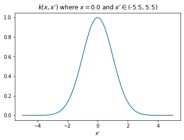

import jax
import jax.numpy as jnp
from tinygp.kernels import ExpSquared
import matplotlib.pyplot as pltRegression
In this post, we will consider the regression problem of finding a reasonable map \(X \to \boldsymbol{y}\) along with uncertainty. We can do this in a simplest setting with Bayesian linear regression assuming a MultiVariate Normal (MVN) prior \(\boldsymbol{\theta} \sim \mathcal{N}(\boldsymbol{\mu}_\theta, \Sigma_\theta)\) (why MVN? because \(\theta \in (-\infty, \infty)\)) and Normal likelihood \(y \sim \mathcal{N}(\boldsymbol{x}^T\theta, \sigma_n^2)\) with i.i.d. assumption.
To start with Gaussian process regression, let us first focus on \(\boldsymbol{y}\) (and ignore \(X\)). We assume \(\boldsymbol{f}\) as a random variable and \(\boldsymbol{y}\) as a realization of \(\boldsymbol{f}\) with some noise. It would be a natural probabilistic assumption to assume \(\boldsymbol{f}\) to be MVN distributed since its range is \((-\infty, \infty)\).
\[ p(\boldsymbol{f}) \sim \mathcal{N}(\boldsymbol{m}_f, K_{ff}) \tag{prior} \]
Now, we need to bring in \(X\) in a reasonable way to this formulation. A core assumption connecting \(X\) with \(\boldsymbol{y}\) is the following: > if two inputs \(\boldsymbol{x}\) and \(\boldsymbol{x}'\) are close to each other (how to define the closeness? kernels!), corresponding \(\boldsymbol{y}\) and \(\boldsymbol{y}'\) are likely to be similar.
We use something known as covariance function or kernel (later is more prevalent) to define this closeness. For example, RBF or squared exponential is a well-known kernel:
\[ k_{RBF}(\boldsymbol{x}, \boldsymbol{x}') = \sigma^2 \exp \left(-{\frac {\|\boldsymbol{x} -\boldsymbol{x}' \|^{2}}{2\ell ^{2}}}\right) \tag{kernel} \]
x = jnp.array(0.0).reshape(1, 1)
x_prime = jnp.linspace(-5,5,100).reshape(-1, 1)
plt.plot(x_prime, ExpSquared()(x_prime, x));
plt.xlabel("$x'$")
plt.title(f"$k(x,x')$ where $x={x[0][0]}$ and $x' \in ${plt.xlim()}");
The plot above shows that value of \(k(\boldsymbol{x}, \boldsymbol{x}')\) increases as \(\boldsymbol{x}'\) approaches \(\boldsymbol{x}\) and reduces as it moves far from \(\boldsymbol{x}\). Now, we will connect \(X\) with \(\boldsymbol{f}\) (and thus with \(\boldsymbol{y}\)) through kernel \(k\) with two following assumptions:
- Diagonal entries of \(K_{ff}\) represent variance of \(f_i\), which can be represented by \(k(\boldsymbol{x}_i, \boldsymbol{x}_i)\).
- Non-diagonal entries of \(K_{ff}\) represent covariance between \(f_i\) and \(f_j\) and can be represented by \(k(\boldsymbol{x}_i, \boldsymbol{x}_j)\).
At this point, we have made everything clear about prior \(p(\boldsymbol{f}) \sim \mathcal{N}(\boldsymbol{m}_f, K_{ff})\). Now, we will look at the likelihood. As mentioned earlier, \(\boldsymbol{y}\) is noisy realization of \(f\) so the following likelihood would be a simple and natural choice.
\[ p(\boldsymbol{y}|\boldsymbol{f}) \sim \mathcal{N}(\boldsymbol{f}, \sigma_n^2I) \tag{likelihood} \]
Till now, we followed bottom-up approach and defined prior and likelihood for this problem. Now we will explore the top-down approach.
Our ultimate goal is derive \(p(\boldsymbol{y}^*|X^*,\boldsymbol{y}, X)\) at new inputs \(X^*\). This can be written as:
\[ p(\boldsymbol{y}^*|X^*,\boldsymbol{y}, X) = \int p(\boldsymbol{y}^*|\boldsymbol{f}^*)p(\boldsymbol{f}^*|X^*,\boldsymbol{y}, X)d\boldsymbol{f}^* \tag{pred post new} \]
Here, \(p(\boldsymbol{f}^*|X^*,\boldsymbol{y}, X)\) is the posterior distribution at inputs \(X^*\). Once we derive posterior \(p(\boldsymbol{f}|\boldsymbol{y},X)\), We can find \(p(\boldsymbol{f}^*|X^*,\boldsymbol{y}, X)\) like following:
\[ p(\boldsymbol{f}^*|X^*, \boldsymbol{y}, X) = \int p(\boldsymbol{f}^*|X^*, \boldsymbol{f}, X)p(\boldsymbol{f}|\boldsymbol{y}, X)d\boldsymbol{f} \tag{post new} \]
Here, \(p(\boldsymbol{f}^*|X^*, \boldsymbol{f}, X)\) is a conditional Gaussian distribution with the following closed form:
\[ p(\boldsymbol{f}^*|X^*, \boldsymbol{f}, X) \sim \mathcal{N}(\boldsymbol{m}_{f^*}+K_{f^*f}K_{ff}^{-1}(\boldsymbol{f}-\boldsymbol{m}_{f}), K_{f^*f^*} - K_{f^*f}K_{ff}^{-1}K_{ff^*}) \tag{cond} \]
Posterior \(p(\boldsymbol{f}|\boldsymbol{y}, X)\) can be derived following “Bayes’ rule for Gaussians” (section 2.2.6.2 in pml book2):
\[ p(\boldsymbol{f}|\boldsymbol{y}, X) \sim \mathcal{N}(\boldsymbol{m}_f + K_{ff}\left(K_{ff}+\sigma_n^2I\right)^{-1}(\boldsymbol{y} - \boldsymbol{m}_f), K_{ff} - K_{ff}\left(K_{ff} + \sigma_n^2I\right)^{-1}K_{ff}) \tag{post} \]
We can now substitute Eq. (post) and Eq. (cond) in Eq. (post new). The integral can be solved with using Eq. 2.90 in section 2.2.6.2 in pml book2 and also mentioned in Eq. (int gaussians) in Appendix.
\[ \begin{aligned} p(\boldsymbol{f}^*|X^*, \boldsymbol{y}, X) &\sim \mathcal{N}(\boldsymbol{\mu}^*, \Sigma^*)\\ \boldsymbol{\mu}^* &= \boldsymbol{m}_{f^*}+K_{f^*f}K_{ff}^{-1}(\left[\boldsymbol{m}_f + K_{ff}\left(K_{ff}+\sigma_n^2I\right)^{-1}(\boldsymbol{y} - \boldsymbol{m}_f)\right]-\boldsymbol{m}_{f})\\ &=\boldsymbol{m}_{f^*}+K_{f^*f}K_{ff}^{-1}(K_{ff}\left(K_{ff}+\sigma_n^2I\right)^{-1}(\boldsymbol{y} - \boldsymbol{m}_f))\\ &=\boldsymbol{m}_{f^*}+K_{f^*f}\left(K_{ff}+\sigma_n^2I\right)^{-1}(\boldsymbol{y} - \boldsymbol{m}_f)\\ \\ \Sigma^* &= K_{f^*f^*} - K_{f^*f}K_{ff}^{-1}K_{ff^*} + K_{f^*f}K_{ff}^{-1}\left[K_{ff} - K_{ff}\left(K_{ff} + \sigma_n^2I\right)^{-1}K_{ff}\right]K_{ff}^{-1}K_{ff^*}\\ &=K_{f^*f^*} - K_{f^*f}K_{ff}^{-1}K_{ff^*} + K_{f^*f}\left[I - \left(K_{ff} + \sigma_n^2I\right)^{-1}K_{ff}\right]K_{ff}^{-1}K_{ff^*}\\ &=K_{f^*f^*} - K_{f^*f}K_{ff}^{-1}K_{ff^*} + K_{f^*f}\left[K_{ff}^{-1} - \left(K_{ff} + \sigma_n^2I\right)^{-1}\right]K_{ff^*}\\ &=K_{f^*f^*} - K_{f^*f}K_{ff}^{-1}K_{ff^*} + K_{f^*f}K_{ff}^{-1}K_{ff^*} - K_{f^*f}\left(K_{ff} + \sigma_n^2I\right)^{-1}K_{ff^*}\\ &=K_{f^*f^*} - K_{f^*f}\left(K_{ff} + \sigma_n^2I\right)^{-1}K_{ff^*}\\ p(\boldsymbol{f}^*|X^*, \boldsymbol{y}, X) &\sim \mathcal{N}(\boldsymbol{m}_{f^*}+K_{f^*f}\left(K_{ff}+\sigma_n^2I\right)^{-1}(\boldsymbol{y} - \boldsymbol{m}_f), K_{f^*f^*} - K_{f^*f}\left(K_{ff} + \sigma_n^2I\right)^{-1}K_{ff^*}) \end{aligned} \]
Now, we are almost there. Plugging in the above formula in Eq. (pred post) and using known result in Eq. (int gaussians), we get the predictive posterior as following:
\[ p(\boldsymbol{y}^*|X^*,\boldsymbol{y}, X) \sim \mathcal{N}(\boldsymbol{m}_{f^*}+K_{f^*f}\left(K_{ff}+\sigma_n^2I\right)^{-1}(\boldsymbol{y} - \boldsymbol{m}_f), K_{f^*f^*} - K_{f^*f}\left(K_{ff} + \sigma_n^2I\right)^{-1}K_{ff^*} + \sigma_n^2I) \]
Note
We did not exploit the special structure of likelihood variance \(\sigma_n^2I\) anywhere, so, these derivations hold true for full rank likelihood covariance matrices also.
Optimization
We perform type-II likelihood estimation (in other words, minimize log marginal likelihood or evidence term). Our goal is to find optimal model \(\mathcal{M}\) represented by prior (or kernel) hyperparameters and likelihood hyperparameters. We can get the log marginal likelihood using Eq. (int gaussians):
\[ \begin{aligned} p(\boldsymbol{y}|X, \mathcal{M}) &= \int p(\boldsymbol{y}|\boldsymbol{f}) p(\boldsymbol{f})d\boldsymbol{f}\\ &\sim \int \mathcal{N}(\boldsymbol{y}|\boldsymbol{f}, \sigma_n^2I) \mathcal{N}(\boldsymbol{f}|\boldsymbol{m}_f, K_{ff})\\ &\sim \mathcal{N}(\boldsymbol{y}|\boldsymbol{m}_f, K_{ff}+\sigma_n^2I) \end{aligned} \]
For case of RBF kernel, \(\mathcal{M}\) parameters will be \(\{\sigma, \ell, \sigma_n\}\).
Classification (with Laplace approximation)
We will derive a GP predictive posterior for binary case only because for multi-class, it gets a bit complex. Our assumption for prior over the \(\boldsymbol{f}\) can still be the same but likelihood needs to be changed because \(\boldsymbol{y}\) is no more a real number but rather a binary value e.g. 0 or 1. From Bayesian point-of-view, Bernoulli likelihood would be the most appropriate as a likelihood here:
\[ p(\boldsymbol{y}|\boldsymbol{f}) = \prod_{i=1}^{N} \sigma(f_i)^{y_i=1}(1-\sigma(f_i))^{y_i=0} \tag{class likelihood} \]
Since, MVN prior and Bernoulli likelihood are not conjugate, we need to use an approximate method of inference here. We use Laplace approximation to get the MAP estimate \(\boldsymbol{\hat{f}}\) and by computing the Hessian \(H\) of negative log joint (log prior + log likelihood) with respect to \(\boldsymbol{\hat{f}}\), we can get the posterior distribution as the following:
\[ p(\boldsymbol{f}|\boldsymbol{y}, X) \sim \mathcal{N}(\boldsymbol{\hat{f}}, H^{-1}) \tag{class post} \]
Eq. (cond) will be the same in this case, and thus, we can solve Eq. (post new) as we did for regression case, like the following:
\[ p(\boldsymbol{f}^*|X^*, \boldsymbol{y}, X) \sim \mathcal{N}(\boldsymbol{m}_{f^*}+K_{f^*f}K_{ff}^{-1}(\boldsymbol{\hat{f}}-\boldsymbol{m}_{f}), K_{f^*f^*} - K_{f^*f}K_{ff}^{-1}K_{ff^*} + K_{f^*f}K_{ff}^{-1}H^{-1}K_{ff}^{-1}K_{ff^*}) \]
Optimization
To perform Type-II likelihood estimation for binary classification, we first need to derive the log marginal likelihood which can be approximated with Laplace approximation. First, we define the following quantity:
\[ \boldsymbol{\psi}(\boldsymbol{f}) \triangleq \log p(\boldsymbol{y}|\boldsymbol{f}) + \log p(\boldsymbol{f}) \]
Now, computing the log marginal likelihood as suggested in section 3.4.4 of GPML book:
\[ \begin{aligned} \log p(\boldsymbol{y}|X, \mathcal{M}) &\sim \log \left[ \int p(\boldsymbol{y}|\boldsymbol{f}) p(\boldsymbol{f})d\boldsymbol{f}\right]\\ &= \log \left[ \int \exp\left(\boldsymbol{\psi}(\boldsymbol{f})\right)d\boldsymbol{f} \right]\\ &\thickapprox \log \left[ \int \exp\left(\boldsymbol{\psi}(\boldsymbol{\hat{f}}) -\frac{1}{2}(\mathbf{f}-\hat{\mathbf{f}})^{\top} H(\mathbf{f}-\hat{\mathbf{f}})\right)d\boldsymbol{f} \right]\\ &= \log \left[ \exp \boldsymbol{\psi}(\boldsymbol{\hat{f}}) \int exp\left(-\frac{1}{2}(\mathbf{f}-\hat{\mathbf{f}})^{\top} H(\mathbf{f}-\hat{\mathbf{f}})\right)d\boldsymbol{f}\right]\\ &= \log p(\boldsymbol{y}|\boldsymbol{\hat{f}}) + \log p(\boldsymbol{\hat{f}}) - \frac{N}{2}\log(2\pi) - \frac{1}{2}\log|H^{-1}|\\ &= \log p(\boldsymbol{y}|\boldsymbol{\hat{f}}) -\frac{1}{2}\boldsymbol{\hat{f}}^TK_{ff}^{-1}\boldsymbol{\hat{f}} - \frac{1}{2}\log|K_{ff}| - \frac{N}{2}\log(2\pi) - \frac{1}{2}\log|H^{-1}| - \frac{N}{2}\log(2\pi) \end{aligned} \]
Our final optimization algorithm would be as following: 1. For N iterations do 2. to 4. 2. Optimize for \(\boldsymbol{\hat{f}}\) with M iterations using standard MAP estimation (maybe use non-centered parametrization). 3. Compute gradient of parameters of \(\mathcal{M}\) w.r.t. log marginal likelihood 4. Update parameters of \(\mathcal{M}\).
Appendix
\[ \int \mathcal{N}(\boldsymbol{y}|W\boldsymbol{x}+\boldsymbol{b}, \Sigma) \mathcal{N}(\boldsymbol{x}|\boldsymbol{\mu}, K) = \mathcal{N}(\boldsymbol{y}|W\boldsymbol{\mu}+b, WKW^T+\Sigma) \tag{int gaussians} \]